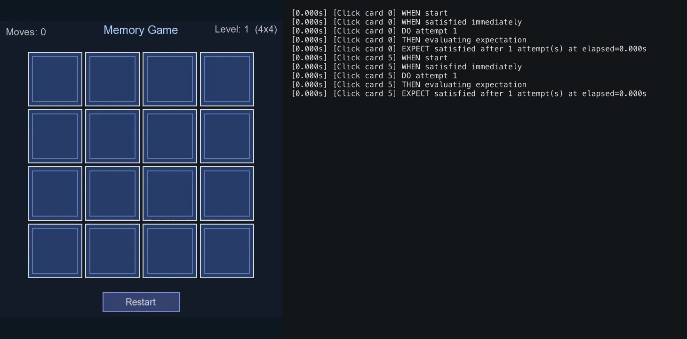
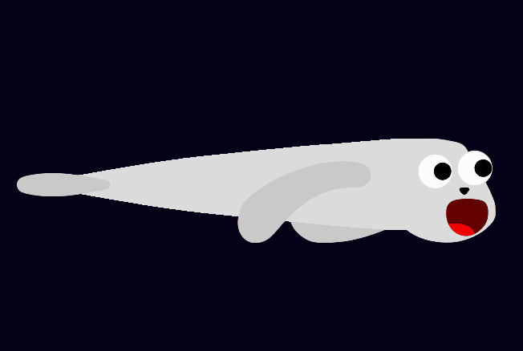
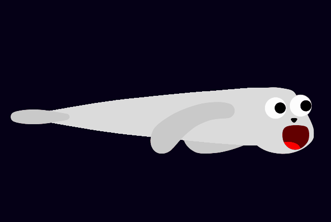
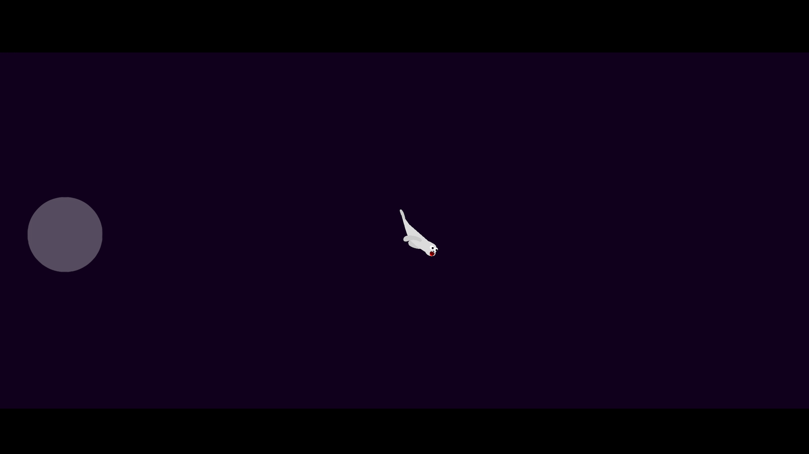
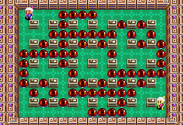

Luan Monteiro
QA Automation Engineer — Game Testing & CI/CD
B.S. Information Systems · Universidade de São Paulo
Portfolio
C++ E2E Test Framework for SFML Games
Repo ↗A game-agnostic E2E test framework built in modern C++, designed to be plugged into any SFML game without modification to the core. Tests are expressed as structured WHEN / DO / THEN / EXPECT steps with automatic retry until expectations are met or a configurable timeout is reached.
- Reliability Flaky-test detection via configurable repeat runs
- CI Mode Headless by default; headed visual mode available
- Logging Timestamped execution logs
- Artifacts Automatic failure screenshot capture as CI artifacts
- Architecture Fully decoupled — consumers provide their own driver factory, bootstrap, and predicates

Automated Tests for Google Maps (Playwright)
Repo ↗Test automation project for Google Maps using Playwright with NUnit. Focuses on location search functionalities.

Website Platform Built with Automated Tests
Repo ↗Exam creation web platform implemented using Ruby on Rails, using its automated testing features to ensure seamless functionality.
Memory Game (C++/SFML) with E2E Test Suite & CI
Repo ↗Memory card-matching game built from scratch in C++/SFML with a custom engine and full E2E test coverage.
- Engine Custom game loop, scene system, and delayed-action timer
- Test Coverage Board setup, card-flip mechanics, match/mismatch logic, and restart behaviour
- CI/CD GitHub Actions builds with CMake/Ninja on every push; headless suite run with failure screenshot artifacts
Ants: Leaf Raiders
Game for iOS and Android using Godot.

Mesh Deformation Shaders (Unity)
Repo ↗Mesh deforming shaders for a Unity game: a mouth-animation shader driven by an angle input, an inflation shader using an Animation Curve baked to texture, and a smooth movement shader.



Bomberman Clone (Godot)
Repo ↗Bomberman adaptation created in Godot, developed collaboratively within USP Game Dev alongside three colleagues.
